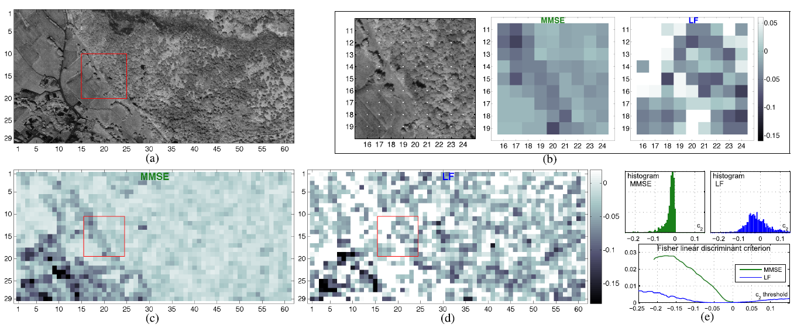
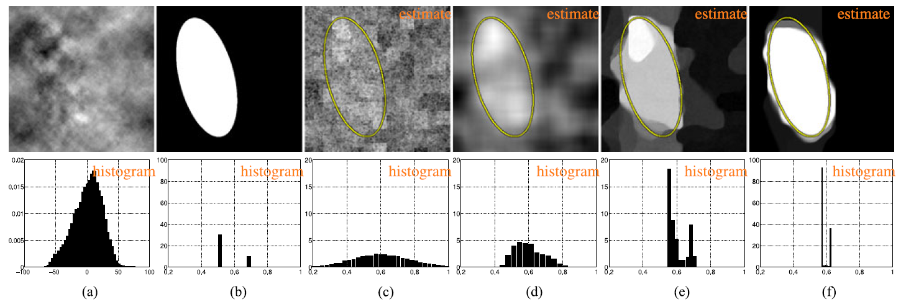

Textured image analysis
Texture characterization is a central element in many image processing applications. Multifractal analysis is a useful signal and image processing tool, yet, the accurate estimation of multifractal parameters for image texture remains a challenge. This is due in the main to the fact that current estimation procedures consist of performing linear regressions across frequency scales of the 2D dyadic wavelet transform, for which only a few such scales are computable for images. The strongly non-Gaussian nature of multifractal processes, combined with their complicated dependence structure, makes it difficult to develop suitable models for parameter estimation.
Bayesian Estimation of the Multifractality Parameter for Image Texture
We propose a Bayesian procedure that addresses the difficulties in the estimation of the multifractality parameter. The originality of the procedure is threefold. The construction of a generic semiparametric statistical model for the logarithm of wavelet leaders; the formulation of Bayesian estimators that are associated with this model and the set of parameter values admitted by multifractal theory; the exploitation of a suitable Whittle approximation within the Bayesian model which enables the otherwise infeasible evaluation of the posterior distribution associated with the model. Performance is assessed numerically for several 2D multifractal processes, for several image sizes and a large range of process parameters. The procedure yields significant benefits over current benchmark estimators in terms of estimation performance and ability to discriminate between the two most commonly used classes of multifractal process models. The gains in performance are particularly pronounced for small image sizes, notably enabling for the first time the analysis of image patches as small as 64x64 pixels.

Fig. 1. Band ♯20 of a hyperspectral datacube (a); estimates of c2 for overlapping 64x64 pixel patches obtained by the proposed MMSE estimator (c) and linear fit (LF) (d); zooms on the patches indicated by a red frame (b); the centers of the image patches are indicated by white dots in the original image, the distance between two of the dots corresponds to one half of the patch size, axis labels indicate patch numbers. Histograms and Fisher linear discriminant criteria for estimates of c2 obtained by MMSE and LF
{kind=link}
The proposed strategy is detailed in paper published in IEEE Trans. Image Processing:
- article
 .
.
The corresponding Matlab code is available as a toolbox online here:
- matlab codes
 [ GitHub].
[ GitHub].
Scale-free texture segmentation
Texture segmentation constitutes a standard image processing task, crucial for many applications. The present contribution focuses on the particular subset of scale-free textures and its originality resides in the combination of three key ingredients: First, texture characterization relies on the concept of local regularity; Second, estimation of local regularity is based on new multiscale quantities referred to as wavelet leaders; Third, segmentation from local regularity faces a fundamental bias variance tradeoff. In nature, local regularity estimation shows high variability that impairs the detection of changes, while a posteriori smoothing of regularity estimates precludes from locating correctly changes. Instead, the present contribution proposes several variational problem formulations based on total variation and proximal resolutions that effectively circumvent this tradeoff. Estimation and segmentation performance for the proposed procedures are quantified and compared on synthetic as well as on real-world textures.

Fig. 2. Illustration of the local regularity estimation from a multifractional data. Top row: (a) image f ; (b) the original local regularity h from which f is generated, the area in black (resp. white) corresponds to a local regularity of 0.5 (resp. 0.7); (c) an estimation based on wavelet leaders; (d) smooth estimate of f; (e) estimation using the method described in Section III-B of the paper (see above); (f) estimation based on the method described in Section III-C of the paper (see above). Bottom row: histograms corresponding to top row.
{kind=link}
The proposed strategy is detailed in paper published in IEEE Trans. Computational Imaging:
- article .